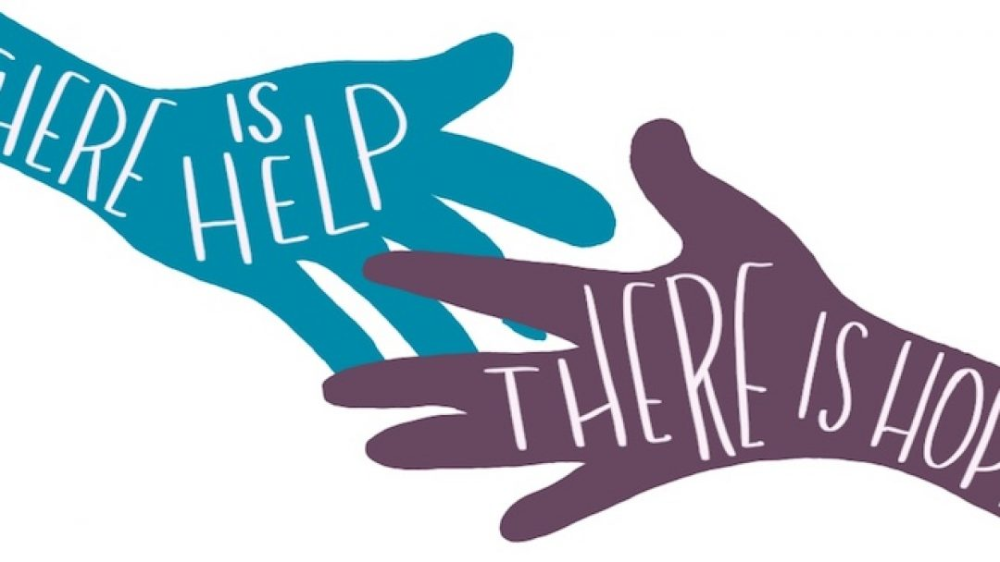

What is
Suicide Prevention?

Suicide and Suicide Prevention
Suicide is a serious public health issue that occurs when an individual takes their own life. It often stems from feelings of hopelessness, unbearable pain, or a sense of being a burden. Suicide is preventable, and awareness, understanding, and timely intervention can save lives.
If you or someone you know is struggling with thoughts of suicide, help is available. Seeking support can make a significant difference.
Warning Signs of Suicide
1. Behavioral Indicators:
- Talking about wanting to die or feeling hopeless.
- Withdrawing from family, friends, or activities.
- Increased use of alcohol or drugs.
- Giving away belongings or making farewell statements.
- Engaging in reckless or self-destructive behavior.
2. Emotional Indicators:
- Intense sadness, anxiety, or agitation.
- Extreme mood swings or irritability.
- Feeling trapped, worthless, or like a burden.
3. Physical Indicators:
- Changes in sleep patterns (insomnia or oversleeping).
- Neglect of personal appearance or hygiene.
Risk Factors for Suicide
- Mental Health Disorders: Depression, bipolar disorder, PTSD, or schizophrenia.
- Substance Abuse: Increased impulsivity and poor judgment.
- Trauma and Abuse: Experiencing violence, bullying, or loss.
- Social Isolation: Feeling disconnected or unsupported.
- Chronic Illness or Pain: Physical suffering can lead to emotional despair.
Preventive Measures
- Recognize the Warning Signs: Pay attention to behavior changes and direct or indirect mentions of suicide.
- Offer Support: Listen without judgment, validate feelings, and express care and concern.
- Encourage Professional Help: Guide the person to seek counseling, therapy, or medical support.
- Limit Access to Means: Reduce access to firearms, medications, or other harmful objects.
- Stay Connected: Regularly check in with those who may be at risk.
- Promote Awareness: Educate communities about mental health and suicide prevention strategies.

Treatment Options
- Crisis Counseling: Immediate support for those in acute distress.
- Psychotherapy: Cognitive Behavioral Therapy (CBT) and Dialectical Behavior Therapy (DBT) are effective.
- Medication: Antidepressants or mood stabilizers prescribed by healthcare professionals.
- Support Groups: Peer-led groups for those struggling with suicidal thoughts or those who have lost loved ones.
- Hotlines and Helplines: Free, confidential assistance available 24/7.
Helpful Links and References
Educational Resources
- American Foundation for Suicide Prevention (AFSP): Information on suicide prevention and education.
- World Health Organization (WHO): Insights into suicide as a global health concern.
- Mayo Clinic: Guidance on recognizing suicide risks and treatment.
Support and Advocacy Groups
- International Association for Suicide Prevention (IASP): Advocacy and support worldwide.
- Befrienders Worldwide: Offers emotional support for those in crisis.
- South African Depression and Anxiety Group (SADAG): Suicide prevention resources for South Africans.
Crisis Helplines
- National Suicide Prevention Lifeline (U.S.): Call 988 for immediate assistance.
- SADAG Suicide Crisis Line (South Africa): Call 0800 567 567 or SMS 31393 for support.
- Crisis Text Line: Text “HELLO” to 741741 for free, 24/7 support.
Self-Help Tools and Apps
- NotOK App: A digital panic button to alert trusted contacts for help.
- Calm Harm: Techniques to manage self-harm urges.
- Headspace: Mindfulness and meditation tools to improve mental health.
Scientific Research and Articles
- PubMed Suicide Research: Access the latest studies on suicide prevention.
- Harvard Health Publishing: Articles on understanding and preventing suicide.
- NIH Suicide Prevention: Evidence-based strategies and resources.
Books and Guides
- “Reasons to Stay Alive” by Matt Haig
- A moving and practical guide for those dealing with suicidal thoughts. Buy on Amazon
- “The Noonday Demon” by Andrew Solomon
- Examines depression and its link to suicide in detail. Buy on Amazon
- “How to Carry What Can’t Be Fixed” by Megan Devine
- A journal for those grieving loss due to suicide. Buy on Amazon

"You don’t have to control your thoughts. You just have to stop letting them control you." — Dan Millman